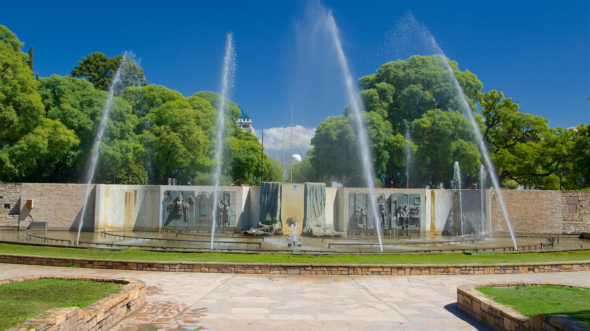
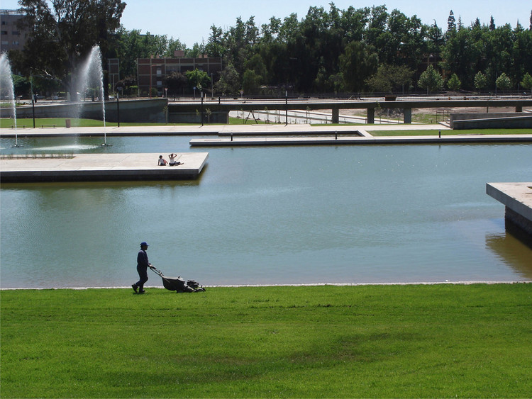
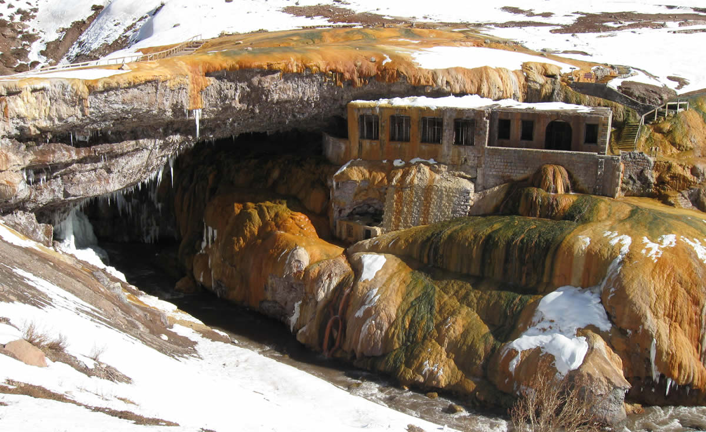
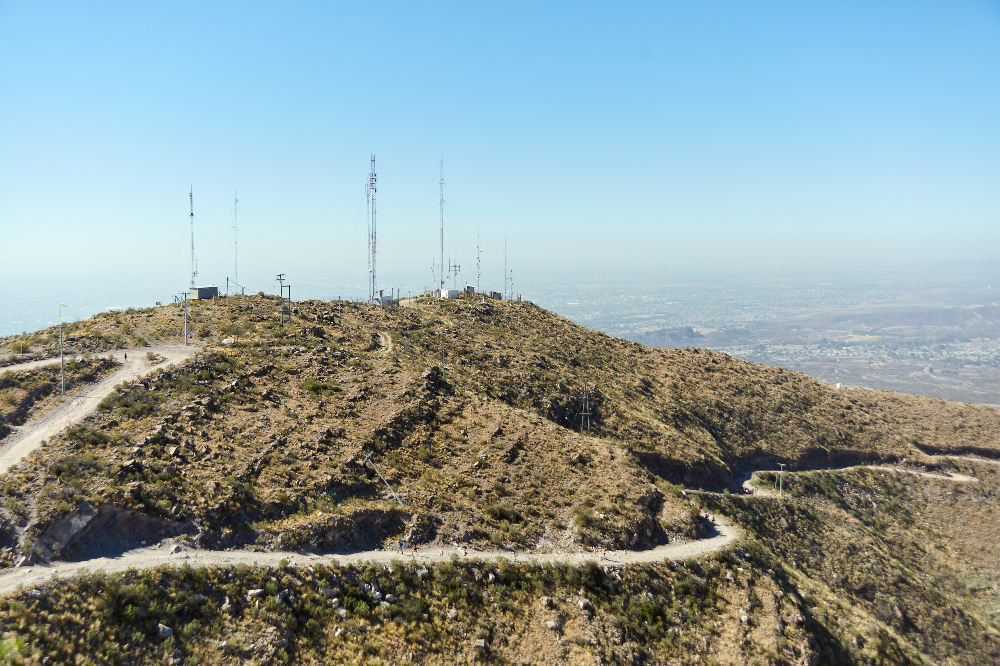

Breve historia de Mendoza
Mendoza, ubicada en la región oeste de Argentina, tiene una rica historia que se remonta a la época precolombina. Antes de la llegada de los colonizadores españoles, la región estaba habitada por pueblos indígenas como los huarpes. La fundación de la ciudad de Mendoza se llevó a cabo en 1561 por el conquistador español Pedro del Castillo.
- La ciudad fue fundada el 2 de marzo de 1561 por Pedro del Castillo como Ciudad de Mendoza del Nuevo Valle de la Rioja.
- El nombre de la ciudad se debe al gobernador de Chile en ese entonces, García Hurtado de Mendoza, ya que en el momento de su fundación estaba bajo la jurisdicción de la Capitanía General de Chile.
- La ciudad de Mendoza se localiza al pie de la Cordillera de los Andes, en una zona llana a una altura de poco más de 750 m.s.n.m.
Lugares Turisticos en Mendoza
Parque San Martin

Plaza indepedencia
Parque Central
Potrerillos

Puente del inca
Cerro arco
Aconcagua